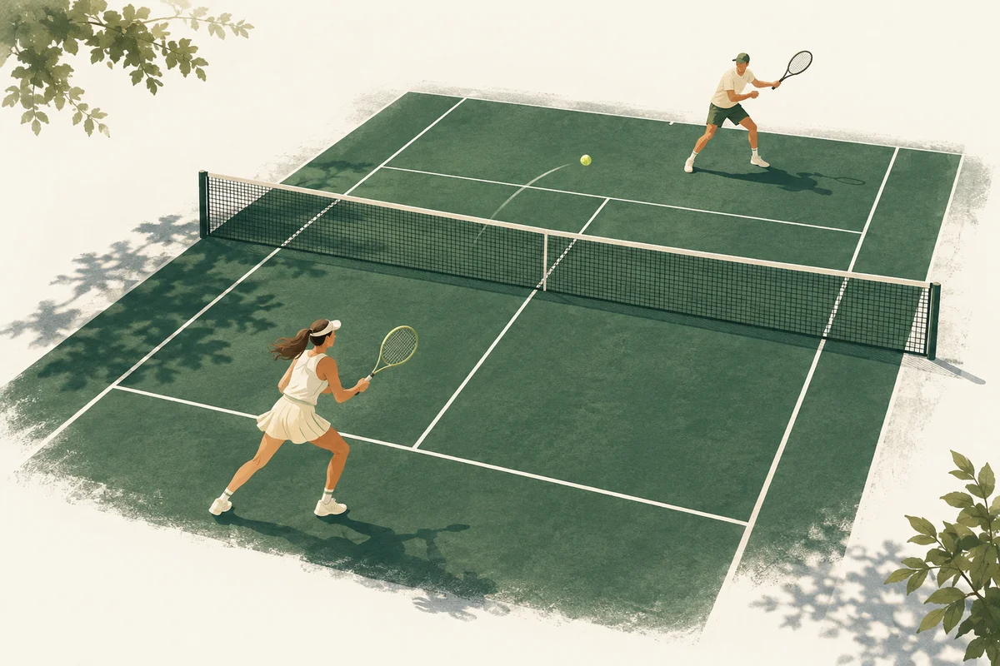
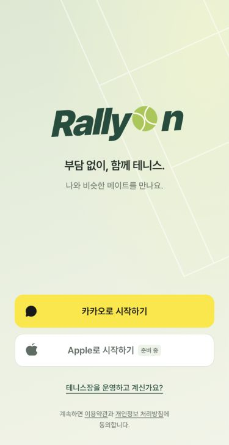

편안한 자신감
포레스트 그린과 따뜻한 흰색, 테니스 공의 라임색. 유아적인 캐릭터나 고급 클럽의 과장 없이 일상적인 운동 서비스로 보이게 합니다.
브랜드 · 일러스트 · 문구
나와 비슷한 메이트를 찾고,
부담 없이 첫 약속을 잡는 경험.
Rally On의 브랜드와 핵심 화면을 다시 정리했습니다.

Rally On을 위해 생성한 브랜드 일러스트 · 실제 코트 사진 아님
iPhone refinement · 2026.10.10
실제 iPhone 영상의 피드백을 반영했습니다. 초록·아이보리를 유지하고 반복 브랜드 헤더와 로그인 경로 차이를 정리했습니다. 추가로 보내 주신 테니스 앱 사례를 반영해, 첫 화면은 서비스명·슬로건·로그인 버튼만 남겼습니다. Rally On에 기울기를 주고 O를 테니스공으로 바꿨으며, 옅은 그린 배경과 코트 라인으로 운동 서비스의 분위기를 더했습니다.
Mobbin 화면은 실제 이미지 관찰 후 구조만 참고했습니다. 검증: iOS 27 Safari 시뮬레이터 및 작은 브라우저 화면. iPhone 13 mini의 실제 앱 최종 확인은 별도이며, 이 후속 수정은 아직 운영 미배포입니다. 아래 화면 갤러리의 시작·프로필·매칭 화면은 후속 수정본입니다.
수정한 로그인 화면 열기 ↗01 / Brand direction
모든 정보를 크게 강조하면 정작 필요한 정보가 보이지 않습니다. 장식보다 정보의 순서, 설명보다 명확한 선택, 강한 경쟁 이미지보다 편안한 첫 만남을 우선했습니다.
포레스트 그린과 따뜻한 흰색, 테니스 공의 라임색. 유아적인 캐릭터나 고급 클럽의 과장 없이 일상적인 운동 서비스로 보이게 합니다.
브랜드 · 일러스트 · 문구
목록은 일시 → 코트 → 플레이 → 남은 자리·비용. 사진의 크기를 통일하고, 같은 정보가 같은 위치에서 보이도록 정렬합니다.
정보 위계 · 매칭 카드 · 상세
온보딩은 질문 하나에 집중하고 선택 결과를 체크로 표시합니다. 상세 하단에는 참가비와 신청 행동을 함께 둡니다.
선택 상태 · 버튼 · 신청 시트
“이 사람이라면 나도
부담 없이 같이 칠 수 있겠다.”
02 / Mobbin research
Mobbin MCP에서 iOS 온보딩·예약 탐색·활동 상세 화면을 조회하고 실제 이미지를 확인했습니다. 아래는 화면 관찰과 Rally On에 맞춘 디자인 판단입니다.
레퍼런스 화면은 각 서비스 및 Mobbin의 자료입니다. 본 제안서에서 출처와 분석 목적으로 제시하며 앱의 이미지 자산으로 사용하지 않았습니다. 해당 화면이 전환율 향상을 입증한다는 뜻은 아니며, 실제 개선 효과는 이후 사용자 테스트로 확인해야 합니다.
03 / Updated experience
아래는 별도 목업이 아니라, 실제 앱 컴포넌트를 개발 전용 예시 데이터로 렌더링한 화면입니다. 화면을 바꾸고 휴대전화 프레임 안을 스크롤해 살펴보세요.

개발 미리보기 캡처 · 코트·닉네임·금액은 예시
상단 화면 선택 도구와 개발 아이콘은 운영 화면에 표시되지 않습니다.
01 / First impression
서비스명과 짧은 취지, 시작할 방법만 남긴 간결한 진입 화면.
04 / Design system
기존 WDS와 Phosphor 아이콘을 유지하고 색·간격·상태를 공통 규칙으로 정리했습니다. 새로운 UI 라이브러리나 운영 의존성은 추가하지 않았습니다.
Court green#174C3C · 주요 행동
Ball lime#D9ED92 · 포인트
Warm white#F7F8F2 · 바탕
Ink#202D27 · 본문
Secondary#5D6B62 · 보조
Line#DFE5DD · 구분
Pretendard / 한글 시스템 폰트
일정·금액은 등폭 숫자, 긴 코트명은 줄바꿈 허용.
초록은 주요 행동, 배지는 플레이의 성격.
마감·오류·선택은 반드시 문구 또는 체크와 함께 표시합니다.
선택 카드 전체가 터치 영역입니다. 키보드 포커스를 표시하고 단계가 바뀌면 새 질문으로 포커스를 이동합니다. 자유 입력은 기존 필수 정보와 선택 자기소개에만 사용합니다.
페이지 여백 20–24px. 반복 간격으로 정보의 묶음을 표현합니다.
주요 공통 버튼은 최소 44–52px. 좁은 화면에서도 누르기 쉽게 만듭니다.
입력·버튼·카드에 한정된 곡률. 모든 영역을 큰 상자로 만들지 않습니다.
05 / Implementation & verification
화면을 단순하게 만들면서 인증·정원·추천·입금·취소·환불의 서버 정책은 유지했습니다. Claude가 작업한 네이티브 시제품과 기존 문서 변경은 보존했습니다.
| 영역 | 이번 적용 | 범위 |
|---|---|---|
| 브랜드·공통 UI | 브랜드 락업, 컬러 토큰, 공통 버튼, 포커스, 선택 카드, 하단 내비게이션 | 코드 적용 기존 WDS 기반 |
| 첫 진입·프로필 | 카카오 진입, 질문·진행 표시, 실제 선택값 요약, 연결 오류·재시도 | 코드 적용 인증 계약 유지 |
| 매칭 탐색·상세 | 헤더·내 매칭 진입, 카드 정보 순서, 작은 사진, 상세 구획, 신청 시트 스타일 | 코드 적용 기존 데이터·API 사용 |
| 개설·코트 매칭·마이·채팅 | 기존 구성 위에 공통 색·카드·타이포 적용, 일부 문구와 간격 정리 | 스타일 정리 각 운영 상태를 전면 재설계한 것은 아님 |
| 운영·금융 처리 화면 | 공통 토큰 반영. 상세 상태·필수 고지·처리 절차 유지 | 개별 검증 필요 운영·내부 관리 화면의 V2 스타일 적용 완료 |
| 배포·네이티브 | 로컬 업데이트와 개발 미리보기 제공 | 아직 미배포 iPhone 재검증 전 |
V2를 서비스 전체 기준으로 적용했습니다. 코트 목록의 절차 설명은 미리보기 전용이며 실제 목록에는 추가하지 않았습니다. 예시 미리보기는 실제 신청·저장을 하지 않으며 일부 필터와 운영 동작은 시연 대상이 아닙니다. 개발 전용 경로는 프로덕션에서 404 처리됩니다. 모바일 브라우저 크기 검증은 실제 iPhone의 사용성 검증을 대체하지 않습니다.
The next rally
시작 → 프로필 → 매칭 → 상세 → 같이 치기.
새 화면을 확인한 뒤 iPhone에서 같은 흐름을 검증하면 됩니다.